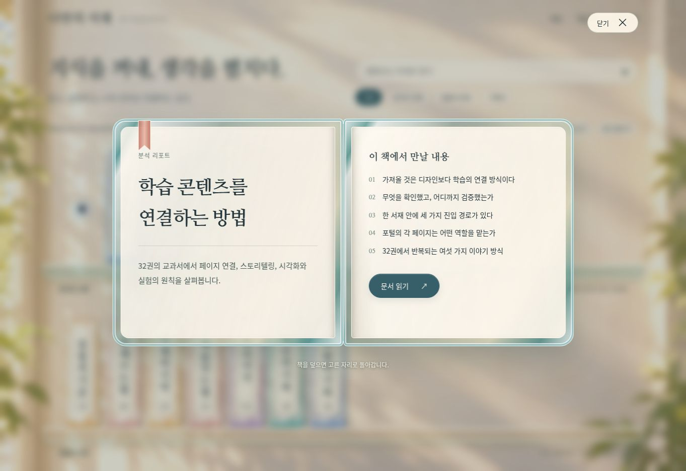

독자에게 달라진 점
현재 등록된 실제 자료 13개를 세 분류의 유리 서가에 배치했습니다. 책등은 맑은 유리, 제목 뒤는 아이보리 라벨로 분리합니다. 명조체 제목 아래 작은 분류를 표시하며, 선택하면 책이 앞으로 나와 회전한 뒤 두 면으로 펼쳐집니다.
펼친 책에는 제목·소개·실제 문서의 주요 목차가 있습니다. 목차 링크나 읽기 버튼으로 본문을 열고, 닫기 또는 Escape로 원래 책과 포커스로 돌아갑니다. 검색·분류·빈 결과 초기화·전체 제목 목록 보기·동작 줄이기를 제공합니다. 학습 책은 아직 미등록 상태입니다.

작게 나눈 구현 구조
| 파일 | 책임 |
|---|---|
| data/catalog.json | 자료·책·짧은 책등 제목·분류·색의 원본. |
| scripts/build_catalog.py | 카탈로그를 index.html의 생성 구역에 반영. 중복 ID와 발행 상태 검사. |
| scripts/shelf_renderer.py | 한 선반에 최대 12권을 배치하고 실제 문서에서 주요 목차를 추출. HTML 이스케이프와 URL 검사. |
| assets/home.css / shelf.css / reader.css | 방과 공통 UI / 유리 책등과 선반 / 펼친 책과 모바일 읽기 면. |
| assets/home.js / shelf-model.mjs | 검색·필터·목록·동작 설정 / DOM과 분리한 검색·입력 판단. |
| assets/reader.js / motion.js | 네이티브 dialog의 열기·닫기·포커스 / 선택한 책의 CSS 변환과 Web Animations. |
프레임워크와 서버를 추가하지 않았습니다. 모든 문서 링크를 정적 HTML에 남겨 JavaScript 없이도 열 수 있습니다. 수정키 클릭은 브라우저의 원래 링크 동작을 유지합니다. CSS 재질은 유리의 시각적 표현이며 광학 시뮬레이션이 아닙니다.
동작 설정 키는 bookshelf:hub:v1:motion입니다. 시스템의 동작 줄이기가 우선하며, 저장소 접근이 차단된 환경에서도 현재 페이지의 전환은 동작합니다. 미리보기 텍스트와 목차는 빌드 시 생성하므로 문서 제목을 바꾸면 카탈로그 생성기도 다시 실행합니다.
실제로 확인한 결과
| 검사 | 관찰 결과 |
|---|---|
| 13개 자료 | 모든 책을 열고 각 전체 제목이 맞는지 확인한 뒤 닫았습니다. |
| 검색·분류 | “시각화” 검색 2개, 검색 중 기획서 필터 0개, 전체 자료 보기로 13개 복원. |
| 목록 보기 | 책등의 축약 제목 대신 전체 제목 표시. 서가로 전환 가능. |
| 키보드 | Enter로 열기, Escape로 닫기, 닫힌 뒤 원래 책으로 포커스 복원. 모달에서 Shift+Tab 이동 확인. |
| 동작 줄이기 | 수동 전환 후 즉시 열기·닫기와 새로고침 후 설정 유지 확인. 시스템 우선순위는 단위 테스트. |
| 연속 조작 | 열기 직후 닫기를 요청한 뒤 선택 흔적·임시 책 요소가 0개이며 원래 책으로 복귀함을 확인. |
| 본문 연결 | 데스크톱에서 분석 리포트로 이동 후 뒤로 돌아오기. 모바일 프레임에서는 협업 문서 읽기 버튼을 클릭해 본문 이동 확인. |
| 반응형 | 320·390·768·1024px iframe에서 문서 가로 넘침 0, 책등 제목 잘림 0. 스크롤바를 제외한 실제 콘텐츠 폭은 305·375·753·1009px. |
| 좁은 화면의 펼침 | 390px과 320px에서 제목·소개·목차·읽기 링크를 한 열로 확인. 선반 내부 가로 스크롤은 유지. |
| 정적 무결성 | HTML 15개 내부 링크·앵커, 카탈로그 동기화, Python 함수 100줄 제한 검사 통과. |
검증 도구: 공개 GitHub Pages를 Chrome 브라우저로 직접 조작. 반응형 검증 화면은 동일한 사이트를 지정한 폭의 iframe에 표시합니다. 실제 모바일 기기·Safari·Firefox·화면 읽기 프로그램·저성능 장치 성능·Lighthouse 수치는 이번에 검사하지 않았습니다.
python3 scripts/build_catalog.py --check
python3 scripts/validate.py
python3 -m unittest discover -s tests -v
node --test tests/test_shelf_model.mjs
node --check assets/home.js
node --check assets/reader.js
node --check assets/motion.js단위 테스트는 카탈로그의 안전한 URL, 중복 ID, 발행 전 링크 차단, 25권의 선반 분할, 긴 제목, 반복 생성, 복합 검색, 동작 설정 우선순위, 수정키 클릭 보존을 확인합니다.
발견한 문제와 수정
| 증상 | 원인·조치 |
|---|---|
| 선반 옆 세로 스크롤바 | 유리 책의 회전·반올림 때문에 트랙에 약 1px 넘침이 생겼습니다. 세로 overflow는 숨기고 가로 넘김은 유지했습니다. |
| 새 HTML에서 제목이 잘림 | 배포 직후 새 HTML과 브라우저에 캐시된 이전 CSS가 섞였습니다. CSS·진입 스크립트 URL에 버전을 붙였으며, 새 버전의 CSS로 제목 13개와 네 화면 폭을 재검사했습니다. |
| 목록의 제목이 지나치게 짧음 | 책등용 축약 제목과 별도로 전체 제목을 출력하고 목록 보기에서 전환합니다. |
| 길이가 긴 책등 제목 | 초기에는 말줄임표와 글자 축소를 사용했습니다. 2026-10-07 후속 요청으로 이 처리를 제거하고 최대 18px·공백 제외 6글자의 직접 편집 규칙으로 교체했습니다. 전체 제목은 접근성 이름·목록·미리보기에 보존합니다. |
| 로컬 브라우저 실행 환경 | 설치 다운로드가 정상 ZIP으로 제공되지 않았습니다. 공개 페이지의 직접 조작으로 화면과 인터랙션을 검증했습니다. |
브라우저 확장 프로그램의 메타데이터 오류와 페이지 코드 오류는 구분했습니다. 화면 검사에서 페이지 코드가 중단되는 오류는 관찰하지 않았습니다. 원 사이트의 모든 실험 정확성과 학습 효과를 새로 검증했다는 의미는 아닙니다.
자산과 출처
승인 목업과 빈 방 배경은 이번 디자인 과정에서 생성했습니다. 배경에는 책·선반·텍스트를 넣지 않았고, 선택 가능한 책과 글자는 실제 HTML·CSS입니다. evidence/design에 승인 목업, assets/images/library-room.webp에 약 48KB의 배경을 보관합니다.
명조체는 Google Fonts 저장소의 Nanum Myeongjo Bold를 WOFF 컨테이너로 변환해 자체 제공하며, 원본 OFL 라이선스를 함께 보관합니다. 글리프 디자인은 수정하지 않았습니다. 검색·분류·본문 보조 텍스트에는 운영체제 고딕체를 사용합니다.
다음 작업과 유지보수
다음 단계는 첫 학습 책의 주제·독자·끝에 할 수 있어야 하는 일을 정하는 것입니다. 그 책의 독립 저장소와 GitHub Pages가 준비되면 카탈로그에 등록합니다. 현재 서재의 검색은 운영 자료를 대상으로 하며, 학습 책 본문의 통합 검색은 구현하지 않았습니다.
- 화면을 수정하기 전에 디자인 기준과 승인 목업을 확인합니다.
- 카탈로그의 spine_title은 필수이며 공백 제외 최대 6글자로 내용을 살려 작성합니다. 책등 글자는 최대 18px이고, spine_category는 짧은 분류명으로 작성합니다.
- 문서 또는 카탈로그를 바꾼 뒤 생성기와 검증 명령을 실행합니다.
- CSS·JavaScript를 바꾸면 index.html의 자산 버전도 갱신하고, 배포 완료 후 실제 공개 화면을 확인합니다.
- 완료·확인 범위·다음 행동은 data/work-state.json에, 새로운 문제는 이 문서의 후속 기록에 남깁니다.
책등 제목 규칙 적용 · 2026-10-07
등록된 AI 책의 책등 이름을 “AI 원리 실험”으로 다듬었습니다. 전체 제목은 유지합니다. 생성기는 누락·길이 초과·말줄임표를 오류로 알리며, NFC 정규화 후 공백을 제외한 글자를 셉니다. 제목 길이에 따른 CSS 분기와 자동 자르기를 제거했습니다. 한글·영문을 세로로 바로 세워 18px로 표시합니다.
320px 화면에서 제목 끝과 분류 사이 여백이 부족하여 라벨 높이와 위쪽 여백을 조정했습니다. 수정 후 320·390px에서는 약 5px, 768·1024px에서는 약 6px의 간격을 확인했습니다. 제목 잘림과 문서 가로 넘침은 없었습니다. Python 17개·JavaScript 4개 테스트가 통과했습니다. 후속 검증 기록을 참고하세요.
Codex와 Claude는 AGENTS.md의 공통 규칙과 책등 제목 규칙을 따릅니다.